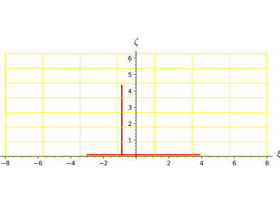
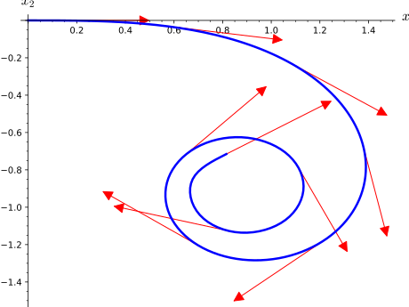

Given a differentiable manifold \(M\), an integrated curve in \(M\)
is a differentiable curve constructed as a solution to a system of
second order differential equations.
Autoparallel curve on the manifold with respect to a given
affine connection.
INPUT:
parent –
IntegratedAutoparallelCurveSet
the set of curves \(\mathrm{Hom_{autoparallel}}(I, M)\) to which the
curve belongs
affine_connection –
AffineConnection
affine connection with respect to which the curve is autoparallel
curve_parameter – symbolic expression to be used as the
parameter of the curve (the equations defining an instance of
IntegratedAutoparallelCurve are such that t will actually be
an affine parameter of the curve)
initial_tangent_vector –
TangentVector
initial tangent vector of the curve
chart – (default: None) chart on the manifold in terms of
which the equations are expressed; if None the default chart
of the manifold is assumed
name – (default: None) string; symbol given to the curve
latex_name – (default: None) string; LaTeX symbol to
denote the curve; if none is provided, name will be used
EXAMPLES:
Autoparallel curves associated with the Mercator projection of the
unit 2-sphere \(\mathbb{S}^{2}\).
On the Mercator projection, the lines of longitude all appear
vertical and then all parallel with respect to each other.
Likewise, all the lines of latitude appear horizontal and parallel
with respect to each other.
These curves may be recovered as autoparallel curves of a certain
connection \(\nabla\) to be made explicit.
Start with declaring the standard polar coordinates
\((\theta, \phi)\) on \(\mathbb{S}^{2}\) and the
corresponding coordinate frame \((e_{\theta}, e_{\phi})\):
Denote \((\hat{e}_{\theta}, \hat{e}_{\phi})\) such an orthonormal frame
field. In any point, the vector field \(\hat{e}_{\theta}\) is
normalized and tangent to the line of longitude through the point.
Likewise, \(\hat{e}_{\phi}\) is normalized and tangent to the
line of latitude.
Now, set an affine connection with respect to such fields that are
parallelly transported in all directions, that is:
\(\nabla \hat{e}_{\theta} = \nabla \hat{e}_{\phi} = 0\).
This is equivalent to setting all the connection coefficients to
zero with respect to this frame:
This connection is such that two vectors are parallel if their
angles to a given meridian are the same.
Check that this connection is compatible with the Euclidean
metric tensor \(g\) induced on \(\mathbb{S}^{2}\):
Note here that the components (v_th0,v_ph0) of the initial
tangent vector v refer to the basis
epolar_ON\(= (\hat{e}_{\theta}, \hat{e}_{\phi})\)
and not the coordinate basis epolar\(= (e_{\theta}, e_{\phi})\).
This is merely to help picture the aspect of the tangent vector in
the usual embedding of \(\mathbb{S}^{2}\) in
\(\mathbb{R}^{3}\) thanks to using an orthonormal frame,
since providing the components with respect to the coordinate basis
would require multiplying the second component (i.e. the \(\phi\)
component) in order to picture the vector in the same way.
This subtlety will need to be taken into account later when the
numerical curve will be compared to the analytical solution.
Now, declare the corresponding integrated autoparallel curve and display
the differential system it satisfies:
sage:[t,tmin,tmax]=var('t tmin tmax')sage:c=S2.integrated_autoparallel_curve(nab,(t,tmin,tmax),....:v,chart=polar,name='c')sage:sys=c.system(verbose=True)Autoparallel curve c in the 2-dimensional differentiable manifold S^2 equipped with Affine connection nab on the 2-dimensional differentiable manifold S^2, and integrated over the Real interval (tmin, tmax) as a solution to the following equations, written with respect to Chart (S^2, (th, ph)):Initial point: Point p on the 2-dimensional differentiable manifold S^2 with coordinates [th0, ph0] with respect to Chart (S^2, (th, ph))Initial tangent vector: Tangent vector at Point p on the 2-dimensional differentiable manifold S^2 with components [v_th0, v_ph0/sin(th0)] with respect to Chart (S^2, (th, ph))d(th)/dt = Dthd(ph)/dt = Dphd(Dth)/dt = 0d(Dph)/dt = -Dph*Dth*cos(th)/sin(th)
>>>fromsage.allimport*>>>[t,tmin,tmax]=var('t tmin tmax')>>>c=S2.integrated_autoparallel_curve(nab,(t,tmin,tmax),...v,chart=polar,name='c')>>>sys=c.system(verbose=True)Autoparallel curve c in the 2-dimensional differentiable manifold S^2 equipped with Affine connection nab on the 2-dimensional differentiable manifold S^2, and integrated over the Real interval (tmin, tmax) as a solution to the following equations, written with respect to Chart (S^2, (th, ph)):<BLANKLINE>Initial point: Point p on the 2-dimensional differentiable manifold S^2 with coordinates [th0, ph0] with respect to Chart (S^2, (th, ph))Initial tangent vector: Tangent vector at Point p on the 2-dimensional differentiable manifold S^2 with components [v_th0, v_ph0/sin(th0)] with respect to Chart (S^2, (th, ph))<BLANKLINE>d(th)/dt = Dthd(ph)/dt = Dphd(Dth)/dt = 0d(Dph)/dt = -Dph*Dth*cos(th)/sin(th)<BLANKLINE>
Set a dictionary providing the parameter range and the initial
conditions for a line of latitude and a line of longitude:
Declare the Mercator coordinates \((\xi, \zeta)\) and the
corresponding coordinate change from the polar coordinates:
sage:mercator.<xi,ze>=S2.chart(r'xi:(-oo,oo):\xi ze:(0,2*pi):\zeta')sage:polar.transition_map(mercator,(log(tan(th/2)),ph))Change of coordinates from Chart (S^2, (th, ph)) to Chart (S^2, (xi, ze))
>>>fromsage.allimport*>>>mercator=S2.chart(r'xi:(-oo,oo):\xi ze:(0,2*pi):\zeta',names=('xi','ze',));(xi,ze,)=mercator._first_ngens(2)>>>polar.transition_map(mercator,(log(tan(th/Integer(2))),ph))Change of coordinates from Chart (S^2, (th, ph)) to Chart (S^2, (xi, ze))
Ask for the identity map in terms of these charts in order to add
this coordinate change to its dictionary of expressions. This is
required to plot the curve with respect to the Mercator chart:
sage:identity=S2.identity_map()sage:identity.coord_functions(polar,mercator)Coordinate functions (log(sin(1/2*th)/cos(1/2*th)), ph) on the Chart (S^2, (th, ph))
>>>fromsage.allimport*>>>identity=S2.identity_map()>>>identity.coord_functions(polar,mercator)Coordinate functions (log(sin(1/2*th)/cos(1/2*th)), ph) on the Chart (S^2, (th, ph))
Solve, interpolate and prepare the plot for the solutions
corresponding to the two initial conditions previously set:
Prepare a grid of Mercator coordinates lines, and plot the curves
over it:
sage:# needs scipy sage.plotsage:graph2D_mercator_coords=mercator.plot(chart=mercator,....:number_values=8,color='yellow')sage:graph2D_mercator+graph2D_mercator_coordsGraphics object consisting of 18 graphics primitives
>>>fromsage.allimport*>>># needs scipy sage.plot>>>graph2D_mercator_coords=mercator.plot(chart=mercator,...number_values=Integer(8),color='yellow')>>>graph2D_mercator+graph2D_mercator_coordsGraphics object consisting of 18 graphics primitives

The resulting curves are horizontal and vertical as expected.
It is easier to check that these are latitude and longitude lines
respectively when plotting them on \(\mathbb{S}^{2}\).
To do so, use \(\mathbb{R}^{3}\) as the codomain of the standard
map embedding \((\mathbb{S}^{2}, (\theta, \phi))\) in the
3-dimensional Euclidean space:
Finally, one may plot a general autoparallel curve with respect to
\(\nabla\) that is neither a line of latitude or longitude.
The vectors tangent to such a curve make an angle different from 0
or \(\pi/2\) with the lines of latitude and longitude.
Then, compute a curve such that both components of its initial
tangent vectors are nonzero:
All the curves presented are loxodromes, and the differential system
defining them (displayed above) may be solved analytically,
providing the following expressions:
where \(\alpha\) is the angle between the curve and any latitude
line it crosses; then, one finds
\(\tan \alpha = - \dot{\theta}_{0} / (\dot{\phi}_{0} \sin \theta_{0})\)
(then \(\tan \alpha \leq 0\) when the initial tangent vector
points towards the southeast).
In order to use these expressions to compare with the result
provided by the numerical integration, remember that the components
(v_th0,v_ph0) of the initial
tangent vector v refer to the basis
epolar_ON\(= (\hat{e}_{\theta}, \hat{e}_{\phi})\) and not the
coordinate basis
epolar\(= (e_{\theta}, e_{\phi})\).
Therefore, the following relations hold:
v_ph0\(= \dot{\phi}_{0} \sin \theta_{0}\) (and not merely
\(\dot{\phi}_{0}\)), while v_th0 clearly is \(\dot{\theta}_{0}\).
With this in mind, plot an analytical curve to compare with a
numerical solution:
Ask for the expression of the loxodrome in terms of the Mercator
chart in order to add it to its dictionary of expressions.
It is a particularly long expression, and there is no particular
need to display it, which is why it may simply be affected to an
arbitrary variable expr_mercator, which will never be used
again.
But adding the expression to the dictionary is required to plot the
curve with respect to the Mercator chart:
Provide a detailed description of the system defining the
autoparallel curve and returns the system defining it: chart,
equations and initial conditions.
INPUT:
verbose – boolean (default: False); prints a detailed
description of the curve
OUTPUT:
list containing the
the equations
the initial conditions
the chart
EXAMPLES:
System defining an autoparallel curve:
sage:M=Manifold(3,'M')sage:X.<x1,x2,x3>=M.chart()sage:[t,A,B]=var('t A B')sage:nab=M.affine_connection('nabla',r'\nabla')sage:nab[X.frame(),0,0,1],nab[X.frame(),2,1,2]=A*x1^2,B*x2*x3sage:p=M.point((0,0,0),name='p')sage:Tp=M.tangent_space(p)sage:v=Tp((1,0,1))sage:c=M.integrated_autoparallel_curve(nab,(t,0,5),v)sage:sys=c.system(verbose=True)Autoparallel curve in the 3-dimensional differentiable manifold M equipped with Affine connection nabla on the 3-dimensional differentiable manifold M, and integrated over the Real interval (0, 5) as a solution to the following equations, written with respect to Chart (M, (x1, x2, x3)):Initial point: Point p on the 3-dimensional differentiable manifold M with coordinates [0, 0, 0] with respect to Chart (M, (x1, x2, x3))Initial tangent vector: Tangent vector at Point p on the 3-dimensional differentiable manifold M with components [1, 0, 1] with respect to Chart (M, (x1, x2, x3))d(x1)/dt = Dx1d(x2)/dt = Dx2d(x3)/dt = Dx3d(Dx1)/dt = -A*Dx1*Dx2*x1^2d(Dx2)/dt = 0d(Dx3)/dt = -B*Dx2*Dx3*x2*x3sage:sys_bis=c.system()sage:sys_bis==sysTrue
>>>fromsage.allimport*>>>M=Manifold(Integer(3),'M')>>>X=M.chart(names=('x1','x2','x3',));(x1,x2,x3,)=X._first_ngens(3)>>>[t,A,B]=var('t A B')>>>nab=M.affine_connection('nabla',r'\nabla')>>>nab[X.frame(),Integer(0),Integer(0),Integer(1)],nab[X.frame(),Integer(2),Integer(1),Integer(2)]=A*x1**Integer(2),B*x2*x3>>>p=M.point((Integer(0),Integer(0),Integer(0)),name='p')>>>Tp=M.tangent_space(p)>>>v=Tp((Integer(1),Integer(0),Integer(1)))>>>c=M.integrated_autoparallel_curve(nab,(t,Integer(0),Integer(5)),v)>>>sys=c.system(verbose=True)Autoparallel curve in the 3-dimensional differentiable manifold M equipped with Affine connection nabla on the 3-dimensional differentiable manifold M, and integrated over the Real interval (0, 5) as a solution to the following equations, written with respect to Chart (M, (x1, x2, x3)):<BLANKLINE>Initial point: Point p on the 3-dimensional differentiable manifold M with coordinates [0, 0, 0] with respect to Chart (M, (x1, x2, x3))Initial tangent vector: Tangent vector at Point p on the 3-dimensional differentiable manifold M with components [1, 0, 1] with respect to Chart (M, (x1, x2, x3))<BLANKLINE>d(x1)/dt = Dx1d(x2)/dt = Dx2d(x3)/dt = Dx3d(Dx1)/dt = -A*Dx1*Dx2*x1^2d(Dx2)/dt = 0d(Dx3)/dt = -B*Dx2*Dx3*x2*x3<BLANKLINE>>>>sys_bis=c.system()>>>sys_bis==sysTrue
Given a chart with coordinates denoted \((x_{1}, \ldots, x_{n})\),
an instance of IntegratedCurve is a curve
\(t \mapsto (x_{1}(t), \ldots, x_{n}(t))\) constructed as a
solution to a system of second order differential equations
satisfied by the coordinate curves \(t \mapsto x_{i}(t)\).
INPUT:
parent –
IntegratedCurveSet
the set of curves \(\mathrm{Hom_{integrated}}(I, M)\) to which the
curve belongs
equations_rhs – list of the right-hand sides of the equations
on the velocities only (the term velocity referring to the
derivatives \(d x_{i} / dt\) of the coordinate curves)
velocities – list of the symbolic expressions used in
equations_rhs to denote the velocities
curve_parameter – symbolic expression used in
equations_rhs to denote the parameter of the curve (denoted
\(t\) in the descriptions above)
initial_tangent_vector –
TangentVector
initial tangent vector of the curve
chart – (default: None) chart on the manifold in
which the equations are given; if None the default chart
of the manifold is assumed
name – (default: None) string; symbol given to the curve
latex_name – (default: None) string; LaTeX symbol to
denote the curve; if none is provided, name will be used
EXAMPLES:
Motion of a charged particle in an axial magnetic field linearly
increasing in time and exponentially decreasing in space:
Start with declaring a chart on a 3-dimensional manifold and the
symbolic expressions denoting the velocities and the various
parameters:
sage:M=Manifold(3,'M',start_index=1)sage:X.<x1,x2,x3>=M.chart()sage:var('t B_0 m q L T')(t, B_0, m, q, L, T)sage:B=B_0*t/T*exp(-(x1^2+x2^2)/L^2)sage:D=X.symbolic_velocities();D[Dx1, Dx2, Dx3]sage:eqns=[q*B/m*D[1],-q*B/m*D[0],0]
>>>fromsage.allimport*>>>M=Manifold(Integer(3),'M',start_index=Integer(1))>>>X=M.chart(names=('x1','x2','x3',));(x1,x2,x3,)=X._first_ngens(3)>>>var('t B_0 m q L T')(t, B_0, m, q, L, T)>>>B=B_0*t/T*exp(-(x1**Integer(2)+x2**Integer(2))/L**Integer(2))>>>D=X.symbolic_velocities();D[Dx1, Dx2, Dx3]>>>eqns=[q*B/m*D[Integer(1)],-q*B/m*D[Integer(0)],Integer(0)]
Declare an integrated curve and display information relative to it:
sage:c=M.integrated_curve(eqns,D,(t,0,5),v,name='c',....:verbose=True)The curve was correctly set.Parameters appearing in the differential system defining the curve are [B_0, L, T, m, q].sage:cIntegrated curve c in the 3-dimensional differentiable manifold Msage:sys=c.system(verbose=True)Curve c in the 3-dimensional differentiable manifold M integrated over the Real interval (0, 5) as a solution to the following system, written with respect to Chart (M, (x1, x2, x3)):Initial point: Point p on the 3-dimensional differentiable manifold M with coordinates [0, 0, 0] with respect to Chart (M, (x1, x2, x3))Initial tangent vector: Tangent vector at Point p on the 3-dimensional differentiable manifold M with components [1, 0, 1] with respect to Chart (M, (x1, x2, x3))d(x1)/dt = Dx1d(x2)/dt = Dx2d(x3)/dt = Dx3d(Dx1)/dt = B_0*Dx2*q*t*e^(-(x1^2 + x2^2)/L^2)/(T*m)d(Dx2)/dt = -B_0*Dx1*q*t*e^(-(x1^2 + x2^2)/L^2)/(T*m)d(Dx3)/dt = 0
>>>fromsage.allimport*>>>c=M.integrated_curve(eqns,D,(t,Integer(0),Integer(5)),v,name='c',...verbose=True)The curve was correctly set.Parameters appearing in the differential system defining the curve are [B_0, L, T, m, q].>>>cIntegrated curve c in the 3-dimensional differentiable manifold M>>>sys=c.system(verbose=True)Curve c in the 3-dimensional differentiable manifold M integrated over the Real interval (0, 5) as a solution to the following system, written with respect to Chart (M, (x1, x2, x3)):<BLANKLINE>Initial point: Point p on the 3-dimensional differentiable manifold M with coordinates [0, 0, 0] with respect to Chart (M, (x1, x2, x3))Initial tangent vector: Tangent vector at Point p on the 3-dimensional differentiable manifold M with components [1, 0, 1] with respect to Chart (M, (x1, x2, x3))<BLANKLINE>d(x1)/dt = Dx1d(x2)/dt = Dx2d(x3)/dt = Dx3d(Dx1)/dt = B_0*Dx2*q*t*e^(-(x1^2 + x2^2)/L^2)/(T*m)d(Dx2)/dt = -B_0*Dx1*q*t*e^(-(x1^2 + x2^2)/L^2)/(T*m)d(Dx3)/dt = 0<BLANKLINE>
Generate a solution of the system and an interpolation of this
solution:
sage:sol=c.solve(step=0.2,# needs scipy....:parameters_values={B_0:1,m:1,q:1,L:10,T:1},....:solution_key='carac time 1',verbose=True)Performing numerical integration with method 'odeint'...Numerical integration completed.Checking all points are in the chart domain...All points are in the chart domain.The resulting list of points was associated with the key 'carac time 1' (if this key already referred to a former numerical solution, such a solution was erased).sage:interp=c.interpolate(solution_key='carac time 1',# needs scipy....:interpolation_key='interp 1',verbose=True)Performing cubic spline interpolation by default...Interpolation completed and associated with the key 'interp 1' (if this key already referred to a former interpolation, such an interpolation was erased).
>>>fromsage.allimport*>>>sol=c.solve(step=RealNumber('0.2'),# needs scipy...parameters_values={B_0:Integer(1),m:Integer(1),q:Integer(1),L:Integer(10),T:Integer(1)},...solution_key='carac time 1',verbose=True)Performing numerical integration with method 'odeint'...Numerical integration completed.<BLANKLINE>Checking all points are in the chart domain...All points are in the chart domain.<BLANKLINE>The resulting list of points was associated with the key 'carac time 1' (if this key already referred to a former numerical solution, such a solution was erased).>>>interp=c.interpolate(solution_key='carac time 1',# needs scipy...interpolation_key='interp 1',verbose=True)Performing cubic spline interpolation by default...Interpolation completed and associated with the key 'interp 1' (if this key already referred to a former interpolation, such an interpolation was erased).
Such an interpolation is required to evaluate the curve and the
vector tangent to the curve for any value of the curve parameter:
sage:# needs scipysage:p=c(1.9,verbose=True)Evaluating point coordinates from the interpolation associated with the key 'interp 1' by default...sage:pPoint on the 3-dimensional differentiable manifold Msage:p.coordinates()# abs tol 1e-12(1.377689074756845, -0.900114533011232, 1.9)sage:v2=c.tangent_vector_eval_at(4.3,verbose=True)Evaluating tangent vector components from the interpolation associated with the key 'interp 1' by default...sage:v2Tangent vector at Point on the 3-dimensional differentiable manifold Msage:v2[:]# abs tol 1e-12[-0.9425156073651124, -0.33724314284285434, 1.0]
>>>fromsage.allimport*>>># needs scipy>>>p=c(RealNumber('1.9'),verbose=True)Evaluating point coordinates from the interpolation associated with the key 'interp 1' by default...>>>pPoint on the 3-dimensional differentiable manifold M>>>p.coordinates()# abs tol 1e-12(1.377689074756845, -0.900114533011232, 1.9)>>>v2=c.tangent_vector_eval_at(RealNumber('4.3'),verbose=True)Evaluating tangent vector components from the interpolation associated with the key 'interp 1' by default...>>>v2Tangent vector at Point on the 3-dimensional differentiable manifold M>>>v2[:]# abs tol 1e-12[-0.9425156073651124, -0.33724314284285434, 1.0]
Plotting a numerical solution (with or without its tangent vector
field) also requires the solution to be interpolated at least once:
sage:c_plot_2d_1=c.plot_integrated(ambient_coords=[x1,x2],# needs scipy....:interpolation_key='interp 1',thickness=2.5,....:display_tangent=True,plot_points=200,....:plot_points_tangent=10,scale=0.5,....:color='blue',color_tangent='red',....:verbose=True)A tiny final offset equal to 0.000251256281407035 was introduced for the last point in order to safely compute it from the interpolation.sage:c_plot_2d_1# needs scipy sage.plotGraphics object consisting of 11 graphics primitives
>>>fromsage.allimport*>>>c_plot_2d_1=c.plot_integrated(ambient_coords=[x1,x2],# needs scipy...interpolation_key='interp 1',thickness=RealNumber('2.5'),...display_tangent=True,plot_points=Integer(200),...plot_points_tangent=Integer(10),scale=RealNumber('0.5'),...color='blue',color_tangent='red',...verbose=True)A tiny final offset equal to 0.000251256281407035 was introduced for the last point in order to safely compute it from the interpolation.>>>c_plot_2d_1# needs scipy sage.plotGraphics object consisting of 11 graphics primitives

An instance of IntegratedCurve may store several numerical
solutions and interpolations:
sage:# needs scipysage:sol=c.solve(step=0.2,....:parameters_values={B_0:1,m:1,q:1,L:10,T:100},....:solution_key='carac time 100')sage:interp=c.interpolate(solution_key='carac time 100',....:interpolation_key='interp 100')sage:c_plot_3d_100=c.plot_integrated(interpolation_key='interp 100',# needs sage.plot....:thickness=2.5,display_tangent=True,....:plot_points=200,plot_points_tangent=10,....:scale=0.5,color='green',....:color_tangent='orange')sage:c_plot_3d_1=c.plot_integrated(interpolation_key='interp 1',# needs sage.plot....:thickness=2.5,display_tangent=True,....:plot_points=200,plot_points_tangent=10,....:scale=0.5,color='blue',....:color_tangent='red')sage:c_plot_3d_1+c_plot_3d_100# needs sage.plotGraphics3d Object
>>>fromsage.allimport*>>># needs scipy>>>sol=c.solve(step=RealNumber('0.2'),...parameters_values={B_0:Integer(1),m:Integer(1),q:Integer(1),L:Integer(10),T:Integer(100)},...solution_key='carac time 100')>>>interp=c.interpolate(solution_key='carac time 100',...interpolation_key='interp 100')>>>c_plot_3d_100=c.plot_integrated(interpolation_key='interp 100',# needs sage.plot...thickness=RealNumber('2.5'),display_tangent=True,...plot_points=Integer(200),plot_points_tangent=Integer(10),...scale=RealNumber('0.5'),color='green',...color_tangent='orange')>>>c_plot_3d_1=c.plot_integrated(interpolation_key='interp 1',# needs sage.plot...thickness=RealNumber('2.5'),display_tangent=True,...plot_points=Integer(200),plot_points_tangent=Integer(10),...scale=RealNumber('0.5'),color='blue',...color_tangent='red')>>>c_plot_3d_1+c_plot_3d_100# needs sage.plotGraphics3d Object
interpolation_key – (default: None) key which the
resulting interpolation will be associated to ; a default
value is given if none is provided
verbose – boolean (default: False); prints information about
the interpolation in progress
OUTPUT: built interpolation object
EXAMPLES:
Interpolating a numerical solution previously computed:
sage:M=Manifold(3,'M')sage:X.<x1,x2,x3>=M.chart()sage:[t,B_0,m,q,L,T]=var('t B_0 m q L T')sage:B=B_0*t/T*exp(-(x1^2+x2^2)/L^2)sage:D=X.symbolic_velocities()sage:eqns=[q*B/m*D[1],-q*B/m*D[0],0]sage:p=M.point((0,0,0),name='p')sage:Tp=M.tangent_space(p)sage:v=Tp((1,0,1))sage:c=M.integrated_curve(eqns,D,(t,0,5),v,name='c')sage:# needs scipysage:sol=c.solve(method='odeint',....:solution_key='sol_T1',....:parameters_values={B_0:1,m:1,q:1,L:10,T:1})sage:interp=c.interpolate(method='cubic spline',....:solution_key='sol_T1',....:interpolation_key='interp_T1',....:verbose=True)Interpolation completed and associated with the key 'interp_T1' (if this key already referred to a former interpolation, such an interpolation was erased).sage:interp=c.interpolate(verbose=True)Interpolating the numerical solution associated with the key 'sol_T1' by default...Performing cubic spline interpolation by default...Resulting interpolation will be associated with the key 'cubic spline-interp-sol_T1' by default.Interpolation completed and associated with the key 'cubic spline-interp-sol_T1' (if this key already referred to a former interpolation, such an interpolation was erased).
>>>fromsage.allimport*>>>M=Manifold(Integer(3),'M')>>>X=M.chart(names=('x1','x2','x3',));(x1,x2,x3,)=X._first_ngens(3)>>>[t,B_0,m,q,L,T]=var('t B_0 m q L T')>>>B=B_0*t/T*exp(-(x1**Integer(2)+x2**Integer(2))/L**Integer(2))>>>D=X.symbolic_velocities()>>>eqns=[q*B/m*D[Integer(1)],-q*B/m*D[Integer(0)],Integer(0)]>>>p=M.point((Integer(0),Integer(0),Integer(0)),name='p')>>>Tp=M.tangent_space(p)>>>v=Tp((Integer(1),Integer(0),Integer(1)))>>>c=M.integrated_curve(eqns,D,(t,Integer(0),Integer(5)),v,name='c')>>># needs scipy>>>sol=c.solve(method='odeint',...solution_key='sol_T1',...parameters_values={B_0:Integer(1),m:Integer(1),q:Integer(1),L:Integer(10),T:Integer(1)})>>>interp=c.interpolate(method='cubic spline',...solution_key='sol_T1',...interpolation_key='interp_T1',...verbose=True)Interpolation completed and associated with the key 'interp_T1' (if this key already referred to a former interpolation, such an interpolation was erased).>>>interp=c.interpolate(verbose=True)Interpolating the numerical solution associated with the key 'sol_T1' by default...Performing cubic spline interpolation by default...Resulting interpolation will be associated with the key 'cubic spline-interp-sol_T1' by default.Interpolation completed and associated with the key 'cubic spline-interp-sol_T1' (if this key already referred to a former interpolation, such an interpolation was erased).
Return the interpolation object associated with the given key.
INPUT:
interpolation_key – (default: None) key which the
requested interpolation is associated to; a default
value is chosen if none is provided
verbose – boolean (default: False); prints information about
the interpolation object returned
OUTPUT: requested interpolation object
EXAMPLES:
Requesting an interpolation object previously computed:
sage:M=Manifold(3,'M')sage:X.<x1,x2,x3>=M.chart()sage:[t,B_0,m,q,L,T]=var('t B_0 m q L T')sage:B=B_0*t/T*exp(-(x1^2+x2^2)/L^2)sage:D=X.symbolic_velocities()sage:eqns=[q*B/m*D[1],-q*B/m*D[0],0]sage:p=M.point((0,0,0),name='p')sage:Tp=M.tangent_space(p)sage:v=Tp((1,0,1))sage:c=M.integrated_curve(eqns,D,(t,0,5),v,name='c')sage:# needs scipysage:sol=c.solve(method='odeint',....:solution_key='sol_T1',....:parameters_values={B_0:1,m:1,q:1,L:10,T:1})sage:interp=c.interpolate(method='cubic spline',....:solution_key='sol_T1',....:interpolation_key='interp_T1')sage:default_interp=c.interpolation(verbose=True)Returning the interpolation associated with the key 'interp_T1' by default...sage:default_interp==interpTruesage:interp_mute=c.interpolation()sage:interp_mute==interpTrue
>>>fromsage.allimport*>>>M=Manifold(Integer(3),'M')>>>X=M.chart(names=('x1','x2','x3',));(x1,x2,x3,)=X._first_ngens(3)>>>[t,B_0,m,q,L,T]=var('t B_0 m q L T')>>>B=B_0*t/T*exp(-(x1**Integer(2)+x2**Integer(2))/L**Integer(2))>>>D=X.symbolic_velocities()>>>eqns=[q*B/m*D[Integer(1)],-q*B/m*D[Integer(0)],Integer(0)]>>>p=M.point((Integer(0),Integer(0),Integer(0)),name='p')>>>Tp=M.tangent_space(p)>>>v=Tp((Integer(1),Integer(0),Integer(1)))>>>c=M.integrated_curve(eqns,D,(t,Integer(0),Integer(5)),v,name='c')>>># needs scipy>>>sol=c.solve(method='odeint',...solution_key='sol_T1',...parameters_values={B_0:Integer(1),m:Integer(1),q:Integer(1),L:Integer(10),T:Integer(1)})>>>interp=c.interpolate(method='cubic spline',...solution_key='sol_T1',...interpolation_key='interp_T1')>>>default_interp=c.interpolation(verbose=True)Returning the interpolation associated with the key 'interp_T1' by default...>>>default_interp==interpTrue>>>interp_mute=c.interpolation()>>>interp_mute==interpTrue
Plot the 2D or 3D projection of self onto the space of the
chosen two or three ambient coordinates, based on the
interpolation of a numerical solution previously computed.
interpolation_key – (default: None) key associated to
the interpolation object used for the plot; a default value
is chosen if none is provided
verbose – boolean (default: False); prints information about
the interpolation object used and the plotting in progress
display_tangent – boolean (default: False); determines whether
some tangent vectors should also be plotted
color_tangent – (default: blue) color of the tangent
vectors when these are plotted
plot_points_tangent – (default: 10) number of tangent
vectors to display when these are plotted
width_tangent – (default: 1) sets the width of the arrows
representing the tangent vectors
scale – (default: 1) scale applied to the tangent vectors
before displaying them
EXAMPLES:
Trajectory of a particle of unit mass and unit charge in an
unit, axial, uniform, stationary magnetic field:
sage:M=Manifold(3,'M')sage:X.<x1,x2,x3>=M.chart()sage:var('t')tsage:D=X.symbolic_velocities()sage:eqns=[D[1],-D[0],0]sage:p=M.point((0,0,0),name='p')sage:Tp=M.tangent_space(p)sage:v=Tp((1,0,1))sage:c=M.integrated_curve(eqns,D,(t,0,6),v,name='c')sage:# needs scipysage:sol=c.solve()sage:interp=c.interpolate()sage:c_plot_2d=c.plot_integrated(ambient_coords=[x1,x2],....:thickness=2.5,....:display_tangent=True,plot_points=200,....:plot_points_tangent=10,scale=0.5,....:color='blue',color_tangent='red',....:verbose=True)Plotting from the interpolation associated with the key 'cubic spline-interp-odeint' by default...A tiny final offset equal to 0.000301507537688442 was introduced for the last point in order to safely compute it from the interpolation.sage:c_plot_2dGraphics object consisting of 11 graphics primitives
>>>fromsage.allimport*>>>M=Manifold(Integer(3),'M')>>>X=M.chart(names=('x1','x2','x3',));(x1,x2,x3,)=X._first_ngens(3)>>>var('t')t>>>D=X.symbolic_velocities()>>>eqns=[D[Integer(1)],-D[Integer(0)],Integer(0)]>>>p=M.point((Integer(0),Integer(0),Integer(0)),name='p')>>>Tp=M.tangent_space(p)>>>v=Tp((Integer(1),Integer(0),Integer(1)))>>>c=M.integrated_curve(eqns,D,(t,Integer(0),Integer(6)),v,name='c')>>># needs scipy>>>sol=c.solve()>>>interp=c.interpolate()>>>c_plot_2d=c.plot_integrated(ambient_coords=[x1,x2],...thickness=RealNumber('2.5'),...display_tangent=True,plot_points=Integer(200),...plot_points_tangent=Integer(10),scale=RealNumber('0.5'),...color='blue',color_tangent='red',...verbose=True)Plotting from the interpolation associated with the key 'cubic spline-interp-odeint' by default...A tiny final offset equal to 0.000301507537688442 was introduced for the last point in order to safely compute it from the interpolation.>>>c_plot_2dGraphics object consisting of 11 graphics primitives
Return the solution (list of points) associated with the given
key.
INPUT:
solution_key – (default: None) key which the
requested numerical solution is associated to; a default
value is chosen if none is provided
verbose – boolean (default: False); prints information about
the solution returned
OUTPUT: list of the numerical points of the solution requested
EXAMPLES:
Requesting a numerical solution previously computed:
sage:M=Manifold(3,'M')sage:X.<x1,x2,x3>=M.chart()sage:[t,B_0,m,q,L,T]=var('t B_0 m q L T')sage:B=B_0*t/T*exp(-(x1^2+x2^2)/L^2)sage:D=X.symbolic_velocities()sage:eqns=[q*B/m*D[1],-q*B/m*D[0],0]sage:p=M.point((0,0,0),name='p')sage:Tp=M.tangent_space(p)sage:v=Tp((1,0,1))sage:c=M.integrated_curve(eqns,D,(t,0,5),v,name='c')sage:# needs scipysage:sol=c.solve(solution_key='sol_T1',....:parameters_values={B_0:1,m:1,q:1,L:10,T:1})sage:sol_bis=c.solution(verbose=True)Returning the numerical solution associated with the key 'sol_T1' by default...sage:sol_bis==solTruesage:sol_ter=c.solution(solution_key='sol_T1')sage:sol_ter==solTruesage:sol_mute=c.solution()sage:sol_mute==solTrue
>>>fromsage.allimport*>>>M=Manifold(Integer(3),'M')>>>X=M.chart(names=('x1','x2','x3',));(x1,x2,x3,)=X._first_ngens(3)>>>[t,B_0,m,q,L,T]=var('t B_0 m q L T')>>>B=B_0*t/T*exp(-(x1**Integer(2)+x2**Integer(2))/L**Integer(2))>>>D=X.symbolic_velocities()>>>eqns=[q*B/m*D[Integer(1)],-q*B/m*D[Integer(0)],Integer(0)]>>>p=M.point((Integer(0),Integer(0),Integer(0)),name='p')>>>Tp=M.tangent_space(p)>>>v=Tp((Integer(1),Integer(0),Integer(1)))>>>c=M.integrated_curve(eqns,D,(t,Integer(0),Integer(5)),v,name='c')>>># needs scipy>>>sol=c.solve(solution_key='sol_T1',...parameters_values={B_0:Integer(1),m:Integer(1),q:Integer(1),L:Integer(10),T:Integer(1)})>>>sol_bis=c.solution(verbose=True)Returning the numerical solution associated with the key 'sol_T1' by default...>>>sol_bis==solTrue>>>sol_ter=c.solution(solution_key='sol_T1')>>>sol_ter==solTrue>>>sol_mute=c.solution()>>>sol_mute==solTrue
Integrate the curve numerically over the domain of definition.
INPUT:
step – (default: None) step of integration; default
value is a hundredth of the domain of integration if none is
provided
method – (default: 'odeint') numerical scheme to
use for the integration of the curve; available algorithms are:
'odeint' – makes use of
scipy.integrate.odeint()
via Sage solver
desolve_odeint(); odeint invokes
the LSODA algorithm of the
ODEPACK suite, which
automatically selects between implicit Adams method (for non-stiff
problems) and a method based on backward differentiation formulas
(BDF) (for stiff problems).
'rk4_maxima' – 4th order classical Runge-Kutta, which
makes use of Maxima’s dynamics package via Sage solver
desolve_system_rk4() (quite slow)
'dopri5' – Dormand-Prince Runge-Kutta of order (4)5 provided by
scipy.integrate.ode
'dop853' – Dormand-Prince Runge-Kutta of order 8(5,3) provided by
scipy.integrate.ode
and those provided by GSL via Sage class
ode_solver:
'rk2' – embedded Runge-Kutta (2,3)
'rk4' – 4th order classical Runge-Kutta
'rkf45' – Runge-Kutta-Felhberg (4,5)
'rkck' – embedded Runge-Kutta-Cash-Karp (4,5)
'rk8pd' – Runge-Kutta Prince-Dormand (8,9)
'rk2imp' – implicit 2nd order Runge-Kutta at Gaussian points
'rk4imp' – implicit 4th order Runge-Kutta at Gaussian points
solution_key – (default: None) key which the
resulting numerical solution will be associated to; a default
value is given if none is provided
parameters_values – (default: None) list of numerical
values of the parameters present in the system defining the
curve, to be substituted in the equations before integration
verbose – boolean (default: False); prints information about
the computation in progress
**control_param – extra control parameters to be passed to the
chosen solver; see the example with rtol and atol below
OUTPUT: list of the numerical points of the computed solution
EXAMPLES:
Computing a numerical solution:
sage:M=Manifold(3,'M')sage:X.<x1,x2,x3>=M.chart()sage:[t,B_0,m,q,L,T]=var('t B_0 m q L T')sage:B=B_0*t/T*exp(-(x1^2+x2^2)/L^2)sage:D=X.symbolic_velocities()sage:eqns=[q*B/m*D[1],-q*B/m*D[0],0]sage:p=M.point((0,0,0),name='p')sage:Tp=M.tangent_space(p)sage:v=Tp((1,0,1))sage:c=M.integrated_curve(eqns,D,(t,0,5),v,name='c')sage:sol=c.solve(parameters_values={B_0:1,m:1,q:1,L:10,T:1},# needs scipy....:verbose=True)Performing numerical integration with method 'odeint'...Resulting list of points will be associated with the key 'odeint' by default.Numerical integration completed.Checking all points are in the chart domain...All points are in the chart domain.The resulting list of points was associated with the key 'odeint' (if this key already referred to a former numerical solution, such a solution was erased).
>>>fromsage.allimport*>>>M=Manifold(Integer(3),'M')>>>X=M.chart(names=('x1','x2','x3',));(x1,x2,x3,)=X._first_ngens(3)>>>[t,B_0,m,q,L,T]=var('t B_0 m q L T')>>>B=B_0*t/T*exp(-(x1**Integer(2)+x2**Integer(2))/L**Integer(2))>>>D=X.symbolic_velocities()>>>eqns=[q*B/m*D[Integer(1)],-q*B/m*D[Integer(0)],Integer(0)]>>>p=M.point((Integer(0),Integer(0),Integer(0)),name='p')>>>Tp=M.tangent_space(p)>>>v=Tp((Integer(1),Integer(0),Integer(1)))>>>c=M.integrated_curve(eqns,D,(t,Integer(0),Integer(5)),v,name='c')>>>sol=c.solve(parameters_values={B_0:Integer(1),m:Integer(1),q:Integer(1),L:Integer(10),T:Integer(1)},# needs scipy...verbose=True)Performing numerical integration with method 'odeint'...Resulting list of points will be associated with the key 'odeint' by default.Numerical integration completed.<BLANKLINE>Checking all points are in the chart domain...All points are in the chart domain.<BLANKLINE>The resulting list of points was associated with the key 'odeint' (if this key already referred to a former numerical solution, such a solution was erased).
The first 3 points of the solution, in the form [t,x1,x2,x3]:
Integrate the curve numerically over the domain of integration, with
the ability to switch chart mid-integration.
The only supported solver is scipy.integrate.ode,
because it supports basic event handling, needed to detect when the
curve is reaching the frontier of the chart. This is an adaptive step
solver. So the step is not the step of integration but instead the
step used to peak at the current chart, and switch if needed.
INPUT:
step – (default: None) step of chart checking; default
value is a hundredth of the domain of integration if none is
provided. If your curve can’t find a new frame on exiting the
current frame, consider reducing this parameter.
charts – (default: None) list of chart allowed. The
integration stops once it leaves those charts. By default the whole
atlas is taken (only the top-charts).
solution_key – (default: None) key which the
resulting numerical solution will be associated to; a default
value is given if none is provided
parameters_values – (default: None) list of numerical
values of the parameters present in the system defining the
curve, to be substituted in the equations before integration
verbose – boolean (default: False); prints information about
the computation in progress
**control_param – extra control parameters to be passed to the
solver
OUTPUT: list of the numerical points of the computed solution
EXAMPLES:
Let us use solve_across_charts() to integrate a geodesic of the
Euclidean plane (a straight line) in polar coordinates.
In pure polar coordinates \((r, \theta)\), artefacts can appear near
the origin because of the fast variation of \(\theta\), resulting in
the direction of the geodesic being different before and after
getting close to the origin.
The solution to this problem is to switch to Cartesian coordinates
near \((0,0)\) to avoid any singularity.
First let’s declare the plane as a 2-dimensional manifold, with two
charts \(P\) en \(C\) (for “Polar” and “Cartesian”) and their transition
maps:
There is a clear non-empty intersection between the two
charts. This is the key point to successfully switch chart during the
integration. Indeed, at least 2 points must fall in the intersection.
Geodesic integration
Let’s define the time as \(t\), the initial point as \(p\), and the
initial velocity vector as \(v\) (define as a member of the tangent
space \(T_p\)). The chosen geodesic should enter the central region
from the left and leave it to the right:
While creating the integrated geodesic, we need to specify the
optional argument across_chart=True, to prepare the compiled
version of the changes of charts:
The integration is done as usual, but using the method
solve_across_charts() instead of solve(). This forces the
use of scipy.integrate.ode as the solver, because of event
handling support.
The argument verbose=True will cause the solver to write a small
message each time it is switching chart:
sage:sol=c.solve_across_charts(step=0.1,verbose=True)# needs scipyPerforming numerical integration with method 'ode'.Integration will take place on the whole manifold domain.Resulting list of points will be associated with the key 'ode_multichart' by default. ...Exiting chart, trying to switch to another chart.New chart found. Resuming integration.Exiting chart, trying to switch to another chart.New chart found. Resuming integration.Integration successful.
>>>fromsage.allimport*>>>sol=c.solve_across_charts(step=RealNumber('0.1'),verbose=True)# needs scipyPerforming numerical integration with method 'ode'.Integration will take place on the whole manifold domain.Resulting list of points will be associated with the key 'ode_multichart' by default. ...Exiting chart, trying to switch to another chart.New chart found. Resuming integration.Exiting chart, trying to switch to another chart.New chart found. Resuming integration.Integration successful.
As expected, two changes of chart occur.
The returned solution is a list of pairs (chart,solution),
where each solution is given on a unique chart, and the last
point of a solution is the first of the next.
The following code prints the corresponding charts:
To plot the result, you must first be sure that the mapping
encompasses all the chart, which is the case here.
You must also specify across_charts=True in order to call
plot_integrated() again on each part.
Finally, color can be a list, which will be cycled through:
Solve the differential system defining self analytically.
Solve analytically the differential system defining a curve
using Maxima via Sage solver desolve_system.
In case of success, the analytical expressions are added to the
dictionary of expressions representing the curve.
Pay attention to the fact that desolve_system only considers
initial conditions given at an initial parameter value equal to
zero, although the parameter range may not contain zero.
Yet, assuming that it does, values of the coordinates functions
at such zero initial parameter value are denoted by the name of
the coordinate function followed by the string '_0'.
OUTPUT:
list of the analytical expressions of the coordinate functions
(when the differential system could be solved analytically),
or boolean False (in case the differential system could
not be solved analytically)
EXAMPLES:
Analytical expression of the trajectory of a charged particle in
a uniform, stationary magnetic field:
sage:M=Manifold(3,'M')sage:X.<x1,x2,x3>=M.chart()sage:[t,B_0,m,q]=var('t B_0 m q')sage:D=X.symbolic_velocities()sage:eqns=[q*B_0/m*D[1],-q*B_0/m*D[0],0]sage:p=M.point((0,0,0),name='p')sage:Tp=M.tangent_space(p)sage:v=Tp((1,0,1))sage:c=M.integrated_curve(eqns,D,(t,0,5),v,name='c')sage:sys=c.system(verbose=True)Curve c in the 3-dimensional differentiable manifold M integrated over the Real interval (0, 5) as a solution to the following system, written with respect to Chart (M, (x1, x2, x3)):Initial point: Point p on the 3-dimensional differentiable manifold M with coordinates [0, 0, 0] with respect to Chart (M, (x1, x2, x3))Initial tangent vector: Tangent vector at Point p on the 3-dimensional differentiable manifold M with components [1, 0, 1] with respect to Chart (M, (x1, x2, x3))d(x1)/dt = Dx1d(x2)/dt = Dx2d(x3)/dt = Dx3d(Dx1)/dt = B_0*Dx2*q/md(Dx2)/dt = -B_0*Dx1*q/md(Dx3)/dt = 0sage:sol=c.solve_analytical()sage:c.expr()((B_0*q*x1_0 - Dx2_0*m*cos(B_0*q*t/m) + Dx1_0*m*sin(B_0*q*t/m) + Dx2_0*m)/(B_0*q), (B_0*q*x2_0 + Dx1_0*m*cos(B_0*q*t/m) + Dx2_0*m*sin(B_0*q*t/m) - Dx1_0*m)/(B_0*q), Dx3_0*t + x3_0)
>>>fromsage.allimport*>>>M=Manifold(Integer(3),'M')>>>X=M.chart(names=('x1','x2','x3',));(x1,x2,x3,)=X._first_ngens(3)>>>[t,B_0,m,q]=var('t B_0 m q')>>>D=X.symbolic_velocities()>>>eqns=[q*B_0/m*D[Integer(1)],-q*B_0/m*D[Integer(0)],Integer(0)]>>>p=M.point((Integer(0),Integer(0),Integer(0)),name='p')>>>Tp=M.tangent_space(p)>>>v=Tp((Integer(1),Integer(0),Integer(1)))>>>c=M.integrated_curve(eqns,D,(t,Integer(0),Integer(5)),v,name='c')>>>sys=c.system(verbose=True)Curve c in the 3-dimensional differentiable manifold M integrated over the Real interval (0, 5) as a solution to the following system, written with respect to Chart (M, (x1, x2, x3)):<BLANKLINE>Initial point: Point p on the 3-dimensional differentiable manifold M with coordinates [0, 0, 0] with respect to Chart (M, (x1, x2, x3))Initial tangent vector: Tangent vector at Point p on the 3-dimensional differentiable manifold M with components [1, 0, 1] with respect to Chart (M, (x1, x2, x3))<BLANKLINE>d(x1)/dt = Dx1d(x2)/dt = Dx2d(x3)/dt = Dx3d(Dx1)/dt = B_0*Dx2*q/md(Dx2)/dt = -B_0*Dx1*q/md(Dx3)/dt = 0<BLANKLINE>>>>sol=c.solve_analytical()>>>c.expr()((B_0*q*x1_0 - Dx2_0*m*cos(B_0*q*t/m) + Dx1_0*m*sin(B_0*q*t/m) + Dx2_0*m)/(B_0*q), (B_0*q*x2_0 + Dx1_0*m*cos(B_0*q*t/m) + Dx2_0*m*sin(B_0*q*t/m) - Dx1_0*m)/(B_0*q), Dx3_0*t + x3_0)
Provide a detailed description of the system defining the curve
and return the system defining it: chart, equations and initial
conditions.
INPUT:
verbose – boolean (default: False); prints a detailed
description of the curve
OUTPUT: list containing
the equations
the initial conditions
the chart
EXAMPLES:
System defining an integrated curve:
sage:M=Manifold(3,'M')sage:X.<x1,x2,x3>=M.chart()sage:[t,B_0,m,q,L,T]=var('t B_0 m q L T')sage:B=B_0*t/T*exp(-(x1^2+x2^2)/L^2)sage:D=X.symbolic_velocities()sage:eqns=[q*B/m*D[1],-q*B/m*D[0],0]sage:p=M.point((0,0,0),name='p')sage:Tp=M.tangent_space(p)sage:v=Tp((1,0,1))sage:c=M.integrated_curve(eqns,D,(t,0,5),v,name='c')sage:sys=c.system(verbose=True)Curve c in the 3-dimensional differentiable manifold M integrated over the Real interval (0, 5) as a solution to the following system, written with respect to Chart (M, (x1, x2, x3)):Initial point: Point p on the 3-dimensional differentiable manifold M with coordinates [0, 0, 0] with respect to Chart (M, (x1, x2, x3))Initial tangent vector: Tangent vector at Point p on the 3-dimensional differentiable manifold M with components [1, 0, 1] with respect to Chart (M, (x1, x2, x3))d(x1)/dt = Dx1d(x2)/dt = Dx2d(x3)/dt = Dx3d(Dx1)/dt = B_0*Dx2*q*t*e^(-(x1^2 + x2^2)/L^2)/(T*m)d(Dx2)/dt = -B_0*Dx1*q*t*e^(-(x1^2 + x2^2)/L^2)/(T*m)d(Dx3)/dt = 0sage:sys_mute=c.system()sage:sys_mute==sysTrue
>>>fromsage.allimport*>>>M=Manifold(Integer(3),'M')>>>X=M.chart(names=('x1','x2','x3',));(x1,x2,x3,)=X._first_ngens(3)>>>[t,B_0,m,q,L,T]=var('t B_0 m q L T')>>>B=B_0*t/T*exp(-(x1**Integer(2)+x2**Integer(2))/L**Integer(2))>>>D=X.symbolic_velocities()>>>eqns=[q*B/m*D[Integer(1)],-q*B/m*D[Integer(0)],Integer(0)]>>>p=M.point((Integer(0),Integer(0),Integer(0)),name='p')>>>Tp=M.tangent_space(p)>>>v=Tp((Integer(1),Integer(0),Integer(1)))>>>c=M.integrated_curve(eqns,D,(t,Integer(0),Integer(5)),v,name='c')>>>sys=c.system(verbose=True)Curve c in the 3-dimensional differentiable manifold M integrated over the Real interval (0, 5) as a solution to the following system, written with respect to Chart (M, (x1, x2, x3)):<BLANKLINE>Initial point: Point p on the 3-dimensional differentiable manifold M with coordinates [0, 0, 0] with respect to Chart (M, (x1, x2, x3))Initial tangent vector: Tangent vector at Point p on the 3-dimensional differentiable manifold M with components [1, 0, 1] with respect to Chart (M, (x1, x2, x3))<BLANKLINE>d(x1)/dt = Dx1d(x2)/dt = Dx2d(x3)/dt = Dx3d(Dx1)/dt = B_0*Dx2*q*t*e^(-(x1^2 + x2^2)/L^2)/(T*m)d(Dx2)/dt = -B_0*Dx1*q*t*e^(-(x1^2 + x2^2)/L^2)/(T*m)d(Dx3)/dt = 0<BLANKLINE>>>>sys_mute=c.system()>>>sys_mute==sysTrue
Return the vector tangent to self at the given curve
parameter with components evaluated from the given
interpolation.
INPUT:
t – curve parameter value at which the tangent vector is
evaluated
interpolation_key – (default: None) key which the
interpolation requested to compute the tangent vector is
associated to; a default value is chosen if none is provided
verbose – boolean (default: False); prints information about
the interpolation used
OUTPUT:
TangentVector
tangent vector with numerical components
EXAMPLES:
Evaluating a vector tangent to the curve:
sage:M=Manifold(3,'M')sage:X.<x1,x2,x3>=M.chart()sage:[t,B_0,m,q,L,T]=var('t B_0 m q L T')sage:B=B_0*t/T*exp(-(x1^2+x2^2)/L^2)sage:D=X.symbolic_velocities()sage:eqns=[q*B/m*D[1],-q*B/m*D[0],0]sage:p=M.point((0,0,0),name='p')sage:Tp=M.tangent_space(p)sage:v=Tp((1,0,1))sage:c=M.integrated_curve(eqns,D,(t,0,5),v,name='c')sage:# needs scipysage:sol=c.solve(method='odeint',....:solution_key='sol_T1',....:parameters_values={B_0:1,m:1,q:1,L:10,T:1})sage:interp=c.interpolate(method='cubic spline',....:solution_key='sol_T1',....:interpolation_key='interp_T1')sage:tg_vec=c.tangent_vector_eval_at(1.22,verbose=True)Evaluating tangent vector components from the interpolation associated with the key 'interp_T1' by default...sage:tg_vecTangent vector at Point on the 3-dimensional differentiable manifold Msage:tg_vec[:]# abs tol 1e-12[0.7392640422917979, -0.6734182509826023, 1.0]sage:tg_vec_mute=c.tangent_vector_eval_at(1.22,....:interpolation_key='interp_T1')sage:tg_vec_mute==tg_vecTrue
>>>fromsage.allimport*>>>M=Manifold(Integer(3),'M')>>>X=M.chart(names=('x1','x2','x3',));(x1,x2,x3,)=X._first_ngens(3)>>>[t,B_0,m,q,L,T]=var('t B_0 m q L T')>>>B=B_0*t/T*exp(-(x1**Integer(2)+x2**Integer(2))/L**Integer(2))>>>D=X.symbolic_velocities()>>>eqns=[q*B/m*D[Integer(1)],-q*B/m*D[Integer(0)],Integer(0)]>>>p=M.point((Integer(0),Integer(0),Integer(0)),name='p')>>>Tp=M.tangent_space(p)>>>v=Tp((Integer(1),Integer(0),Integer(1)))>>>c=M.integrated_curve(eqns,D,(t,Integer(0),Integer(5)),v,name='c')>>># needs scipy>>>sol=c.solve(method='odeint',...solution_key='sol_T1',...parameters_values={B_0:Integer(1),m:Integer(1),q:Integer(1),L:Integer(10),T:Integer(1)})>>>interp=c.interpolate(method='cubic spline',...solution_key='sol_T1',...interpolation_key='interp_T1')>>>tg_vec=c.tangent_vector_eval_at(RealNumber('1.22'),verbose=True)Evaluating tangent vector components from the interpolation associated with the key 'interp_T1' by default...>>>tg_vecTangent vector at Point on the 3-dimensional differentiable manifold M>>>tg_vec[:]# abs tol 1e-12[0.7392640422917979, -0.6734182509826023, 1.0]>>>tg_vec_mute=c.tangent_vector_eval_at(RealNumber('1.22'),...interpolation_key='interp_T1')>>>tg_vec_mute==tg_vecTrue
curve_parameter – symbolic expression to be used as the
parameter of the curve (the equations defining an instance of
IntegratedGeodesic are such that t will actually be an affine
parameter of the curve);
initial_tangent_vector –
TangentVector
initial tangent vector of the curve
chart – (default: None) chart on the manifold in terms of
which the equations are expressed; if None the default chart
of the manifold is assumed
name – (default: None) string; symbol given to the curve
latex_name – (default: None) string; LaTeX symbol to denote
the curve; if none is provided, name will be used
EXAMPLES:
Geodesics of the unit 2-sphere \(\mathbb{S}^{2}\).
Start with declaring the standard polar coordinates
\((\theta, \phi)\) on \(\mathbb{S}^{2}\) and the
corresponding coordinate frame \((e_{\theta}, e_{\phi})\):
Declare the corresponding integrated geodesic and display the
differential system it satisfies:
sage:[t,tmin,tmax]=var('t tmin tmax')sage:c=S2.integrated_geodesic(g,(t,tmin,tmax),v,....:chart=polar,name='c')sage:sys=c.system(verbose=True)Geodesic c in the 2-dimensional Riemannian manifold S^2 equipped with Riemannian metric g on the 2-dimensional Riemannian manifold S^2, and integrated over the Real interval (tmin, tmax) as a solution to the following geodesic equations, written with respect to Chart (S^2, (th, ph)):Initial point: Point p on the 2-dimensional Riemannianmanifold S^2 with coordinates [th0, ph0] with respect toChart (S^2, (th, ph))Initial tangent vector: Tangent vector at Point p on the2-dimensional Riemannian manifold S^2 withcomponents [v_th0, v_ph0] with respect to Chart (S^2, (th, ph))d(th)/dt = Dthd(ph)/dt = Dphd(Dth)/dt = Dph^2*cos(th)*sin(th)d(Dph)/dt = -2*Dph*Dth*cos(th)/sin(th)
>>>fromsage.allimport*>>>[t,tmin,tmax]=var('t tmin tmax')>>>c=S2.integrated_geodesic(g,(t,tmin,tmax),v,...chart=polar,name='c')>>>sys=c.system(verbose=True)Geodesic c in the 2-dimensional Riemannian manifold S^2 equipped with Riemannian metric g on the 2-dimensional Riemannian manifold S^2, and integrated over the Real interval (tmin, tmax) as a solution to the following geodesic equations, written with respect to Chart (S^2, (th, ph)):<BLANKLINE>Initial point: Point p on the 2-dimensional Riemannianmanifold S^2 with coordinates [th0, ph0] with respect toChart (S^2, (th, ph))Initial tangent vector: Tangent vector at Point p on the2-dimensional Riemannian manifold S^2 withcomponents [v_th0, v_ph0] with respect to Chart (S^2, (th, ph))<BLANKLINE>d(th)/dt = Dthd(ph)/dt = Dphd(Dth)/dt = Dph^2*cos(th)*sin(th)d(Dph)/dt = -2*Dph*Dth*cos(th)/sin(th)<BLANKLINE>
Set a dictionary providing the parameter range and the initial
conditions for various geodesics:
Return the system defining the geodesic: chart, equations and
initial conditions.
INPUT:
verbose – boolean (default: False); prints a detailed
description of the curve
OUTPUT: list containing
the equations
the initial equations
the chart
EXAMPLES:
System defining a geodesic:
sage:S2=Manifold(2,'S^2',structure='Riemannian')sage:X.<theta,phi>=S2.chart()sage:t,A=var('t A')sage:g=S2.metric()sage:g[0,0]=Asage:g[1,1]=A*sin(theta)^2sage:p=S2.point((pi/2,0),name='p')sage:Tp=S2.tangent_space(p)sage:v=Tp((1/sqrt(2),1/sqrt(2)))sage:c=S2.integrated_geodesic(g,(t,0,pi),v,name='c')sage:sys=c.system(verbose=True)Geodesic c in the 2-dimensional Riemannian manifold S^2 equipped with Riemannian metric g on the 2-dimensional Riemannian manifold S^2, and integrated over the Real interval (0, pi) as a solution to the following geodesic equations, written with respect to Chart (S^2, (theta, phi)):Initial point: Point p on the 2-dimensional Riemannian manifold S^2 with coordinates [1/2*pi, 0] with respect to Chart (S^2, (theta, phi))Initial tangent vector: Tangent vector at Point p on the 2-dimensional Riemannian manifold S^2 with components [1/2*sqrt(2), 1/2*sqrt(2)] with respect to Chart (S^2, (theta, phi))d(theta)/dt = Dthetad(phi)/dt = Dphid(Dtheta)/dt = Dphi^2*cos(theta)*sin(theta)d(Dphi)/dt = -2*Dphi*Dtheta*cos(theta)/sin(theta)sage:sys_bis=c.system()sage:sys_bis==sysTrue
>>>fromsage.allimport*>>>S2=Manifold(Integer(2),'S^2',structure='Riemannian')>>>X=S2.chart(names=('theta','phi',));(theta,phi,)=X._first_ngens(2)>>>t,A=var('t A')>>>g=S2.metric()>>>g[Integer(0),Integer(0)]=A>>>g[Integer(1),Integer(1)]=A*sin(theta)**Integer(2)>>>p=S2.point((pi/Integer(2),Integer(0)),name='p')>>>Tp=S2.tangent_space(p)>>>v=Tp((Integer(1)/sqrt(Integer(2)),Integer(1)/sqrt(Integer(2))))>>>c=S2.integrated_geodesic(g,(t,Integer(0),pi),v,name='c')>>>sys=c.system(verbose=True)Geodesic c in the 2-dimensional Riemannian manifold S^2 equipped with Riemannian metric g on the 2-dimensional Riemannian manifold S^2, and integrated over the Real interval (0, pi) as a solution to the following geodesic equations, written with respect to Chart (S^2, (theta, phi)):<BLANKLINE>Initial point: Point p on the 2-dimensional Riemannian manifold S^2 with coordinates [1/2*pi, 0] with respect to Chart (S^2, (theta, phi))Initial tangent vector: Tangent vector at Point p on the 2-dimensional Riemannian manifold S^2 with components [1/2*sqrt(2), 1/2*sqrt(2)] with respect to Chart (S^2, (theta, phi))<BLANKLINE>d(theta)/dt = Dthetad(phi)/dt = Dphid(Dtheta)/dt = Dphi^2*cos(theta)*sin(theta)d(Dphi)/dt = -2*Dphi*Dtheta*cos(theta)/sin(theta)<BLANKLINE>>>>sys_bis=c.system()>>>sys_bis==sysTrue